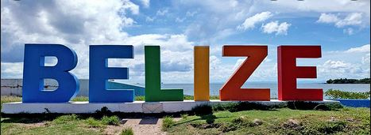

Belize is a small country in Central America than gain it's Independence from Great Britain. Belize is bordered north by Mexico, South & West by Guatemala and the East by the Caribbean Sea. Belize is the only English-Speaking country in Central America & has approximately 400,000 people living there with a diverse culture. Today Belize is tourist attraction in the Caribbean, it is mostly known for the for the largest living barrier reef in the world which includes the Blue Hole. Tourist mostly come to spend their family vacation, have beach weddings then ending up purchasing a vacation home at this little paradise. Belize is a third world country that not only has tourist attraction going on but aloso they still manage to export sugar, bananas, citrus ...etc. just to name a few. Finally, Belize is a growing country on the face of the earth.
